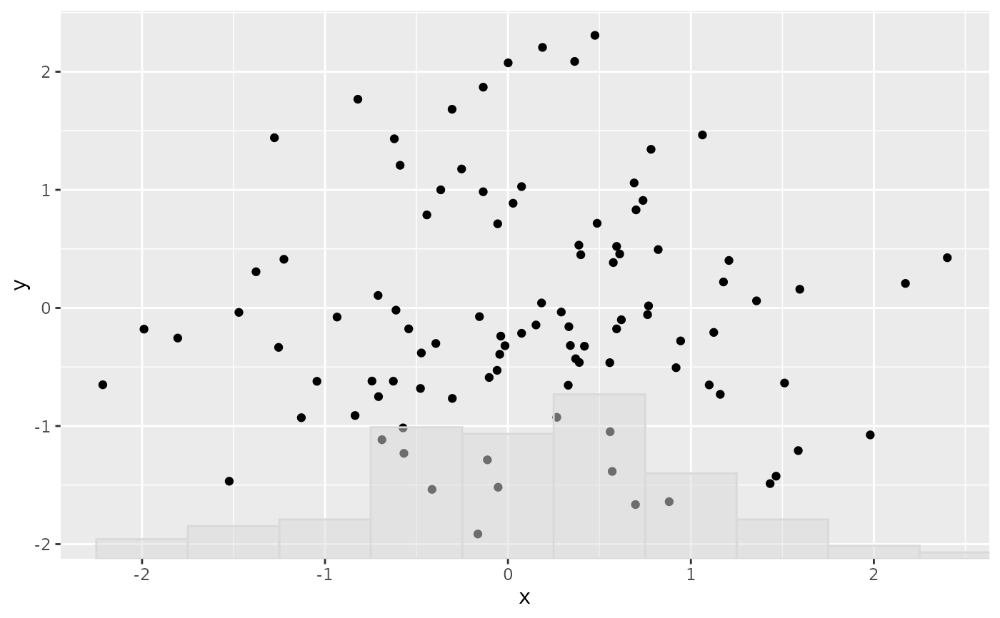
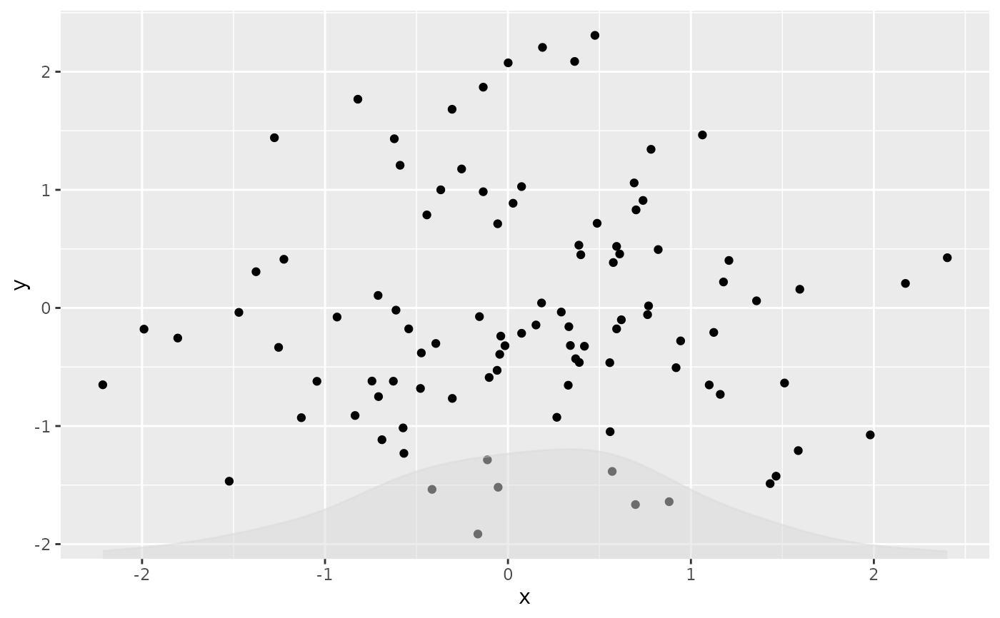

Overlays a rescaled histogram or density curve on the existing plot, using the x-axis variable (or a user-supplied variable).
Usage
fmt_his(
plot,
type = c("histogram", "density", "h", "d"),
height_ratio = 0.3,
data = NULL,
con_var = NULL,
...
)Arguments
- plot
A ggplot, patchwork, or list of ggplots.
- type
"histogram"(or"h") or"density"(or"d").- height_ratio
Finite number from 0 to 1 giving the fraction of each visible panel's y-axis range used for the overlay height. Default: 0.3.
- data
Optional data frame, layer data function or formula. If
NULL, uses the plot data or the first applicable layer's data.- con_var
Optional single column name overriding the x mapping. If
NULL, retains the plot's x-mapping expression, falling back to the first applicable layer mapping.- ...
Named overlay controls. Unknown, unnamed or duplicate arguments are rejected.
NULLretains the default for each control.binwidthPositive finite bin width or a function, as in
ggplot2::geom_histogram(). Default: 3. Histogram only; measured after the x-scale transformation.adjustPositive finite density bandwidth multiplier. Default: 3. Density only.
his_colorSingle colour or
NA. Default:"gray85".his_alphaFinite opacity from 0 to 1. Default: 0.5.
y_rescaleTwo finite values giving the baseline and peak in original y-data units. Default: the panel bottom and
height_ratioabove it in transformed display coordinates.ylimTwo y-coordinate limits in original data units.
NAendpoints remain automatic. Default: original limits; original coordinate type, expansion, clipping and aspect ratio are retained.
Details
Counts and densities are scaled from statistical zero, preserving their relative heights. The fill starts at the requested baseline. Each facet is scaled independently; distribution layers do not retrain the original position scales or inherit grouping, weights or legends. Cartesian coordinates, including flipped and fixed-ratio coordinates, are supported. Nested patchwork layouts and annotations are preserved; spacers, wrapped grobs and inset overlays are skipped. Repeated calls add additional distribution layers. Mapping expressions and data callbacks are evaluated during the normal plot build; formatting does not build or refit the original plot.
See also
Other plot formatting:
fmt_axis(),
fmt_axisText(),
fmt_axisTile(),
fmt_bg(),
fmt_boxplot(),
fmt_com(),
fmt_expand(),
fmt_legend(),
fmt_panel(),
fmt_plot(),
fmt_plot_base(),
fmt_point(),
fmt_raster(),
fmt_ref(),
fmt_scale(),
fmt_strip(),
fmt_strip2(),
fmt_tag(),
fmt_text()
Examples
library(ggplot2)
set.seed(1)
d <- data.frame(x = rnorm(100), y = rnorm(100))
p <- ggplot(d, aes(x, y)) + geom_point()
fmt_his(p, type = "histogram", height_ratio = 0.3, binwidth = 0.5)

fmt_his(p, type = "density", height_ratio = 0.2, adjust = 1)
